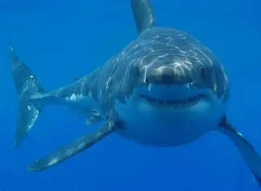
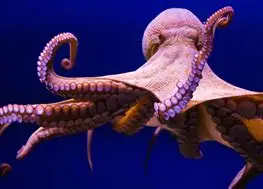

O golfinho é um mamífero aquático conhecido por sua grande inteligência e
comportamento social.
Vive principalmente em oceanos e mares ao redor do mundo.
É carnívoro e se alimenta principalmente de peixes e lulas.
Ouça o barulho emitido pelo golfinho:
Tubarao Branco

O tubarão-branco é um grande peixe conhecido por sua força, velocidade e dentes
afiados.
Vive principalmente em águas costeiras de várias partes do mundo.
É carnívoro e se alimenta de peixes, focas e outros animais marinhos.
Polvo

O polvo é um molusco marinho conhecido por seus oito braços e grande inteligência.
Vive principalmente em oceanos de diversas partes do mundo.
É carnívoro e se alimenta de crustáceos, peixes e outros pequenos animais..